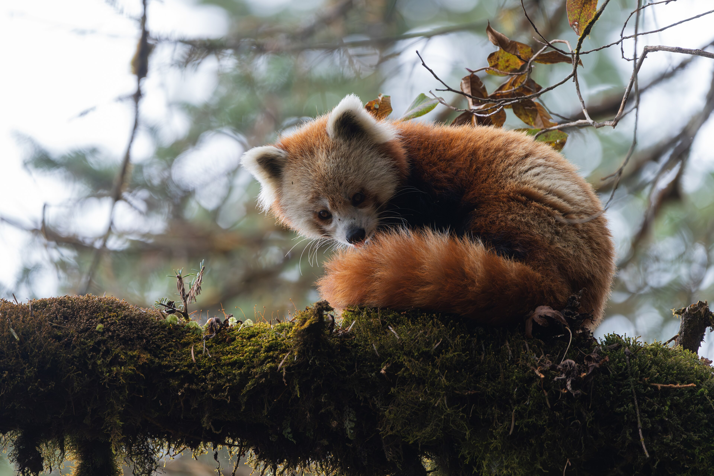

Life of a Red Panda

The red panda (Ailurus fulgens), also known as the "fire fox," is a fascinating arboreal mammal native to the mountainous forests of the Himalayas and China. Despite its name, it is not closely related to the giant panda; in fact, it belongs to its own distinct family (Ailuridae), which is closely related to raccoons. Physically, it resembles a large cat—weighing between 3 and 6 kg—and is distinguished by its thick, reddish-brown fur, white facial markings, a long, furry tail that it uses like a blanket, and a "false thumb" on its wrist that helps it grasp bamboo. Although it belongs to the order Carnivora, its diet is primarily vegetarian, consisting of bamboo shoots, fruit, and insects. Nocturnal and solitary by nature, it spends most of its life in the treetops, aided by its flexible limbs. It is currently classified as an endangered species, with fewer than 10,000 individuals remaining in the wild due to deforestation and poaching. It is also worth noting that this animal inspired the name and iconic logo of the web browser Firefox.
Facts About Red Pandas
- Red pandas are primarily herbivorous, feeding on bamboo, fruits, berries, and occasionally insects and small animals.
- They are solitary creatures and are most active during the early morning and late afternoon.
- Red pandas are classified as endangered due to habitat loss, poaching, and climate change.
- They have a "false thumb" on their wrists that helps them grasp bamboo.